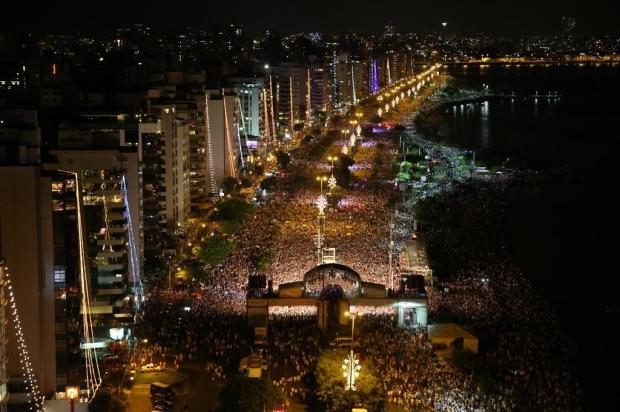

A festa da virada provocará mudanças no trânsito na principal avenida de Florianópolis no dia 31 de dezembro. A Beira-mar Norte será fechada ao tráfego em ambos os sentidos a partir das 18h. O trecho interditado fica entre o Elevado Dias Velho, perto da cabeceira da ponte Hercílio Luz, e o bar Koxixos, na Agronômica. A única exceção é a marginal, a partir do hotel Majestic, no sentido bairro, que ficará aberta para dar vazão ao trânsito que vem da Avenida Mauro Ramos
A orientação para os motoristas que vêm da região da Trindade e do Norte da Ilha é pegar o desvio pela Rua Rui Barbosa, por trás do Direto do Campo, para seguir em direção ao Centro. Quem vem do Continente pode usar o túnel Antonieta de Barros como alternativa.
mais
Quando os trabalhos terminarem, a ideia do governo é que ela seja aberta à passagem de carros e caminhões leves para absorver até 20% dos cerca de 150 mil veículos que atualmente atravessam as pontes Colombo Salles e Pedro Ivo Campos atualmente.